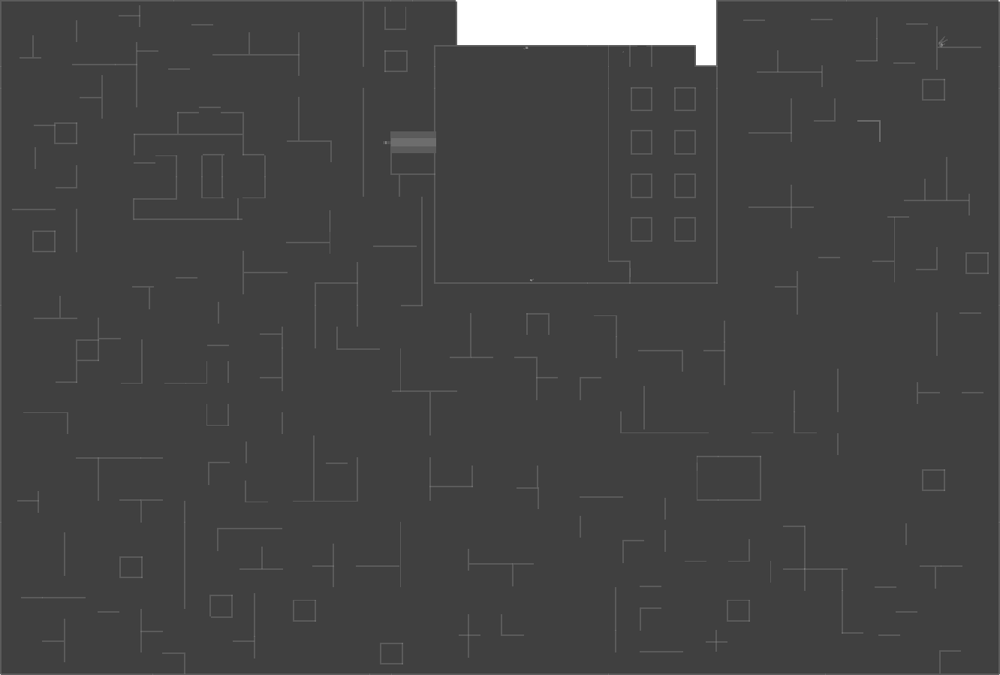

Level 1: Lobby
Information
The Lobby takes on the appearance from most of the backrooms posts you see online. The entire place is a sprawling and labyrinthine network of yellow-tinted walls adorned with mono-yellow wallpaper. It has a repeating yellow, moist carpet floor, and a regular tiled ceiling with fluorescent light sources that buzz incessantly. The lack of windows or natural light sources adds to the feeling of endlessness and claustrophobia. Black scribbled arrows are scattered across the walls, pointing towards the exit which is a vent, with a ladder to climb up.
WalkThrough
- Wake up in the backrooms and follow the arrows drawn on the wall until you find the ladder.
- Climb the ladder through the vent to a large room with various supplies connected to the first puzzle room.
- In this puzzle room, players will see four pillars on the left side, each with a number on it. These numbers correspond to the digits of the elevator code. The numbers on the right side of the pillars indicate the order in which the digits should be entered. It's important to note that the code is randomly generated, so it will be different each time.
- Input the code in that order on the elevator keypad at the end of the room, this will take you to the Dark Rooms.
Notes
In one of the corners of the Lobby contains a corpse holding a Moth Jelly.
This item can be particularly helpful for players who are speedrunning the game.